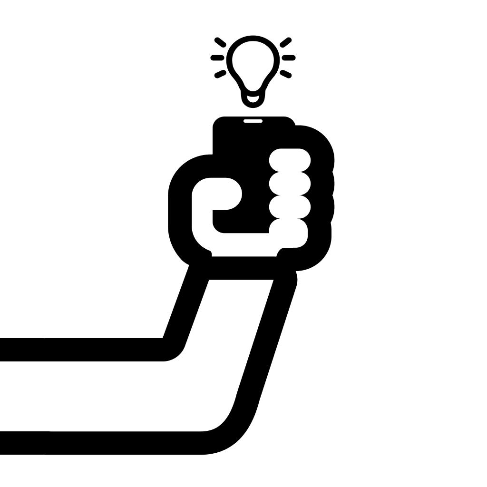

Privacy Policy
Last updated: March 19, 2024
1. Introduction
At SelfieGlowCam, we take your privacy seriously. This Privacy Policy explains how we handle your information when you use our iOS application for capturing and enhancing selfies and videos.
2. Information We Don't Collect
SelfieGlowCam is designed with privacy in mind. We want to be clear about what we don't collect:
- We do not store or upload your photos and videos to any servers
- We do not process your media on external servers - all processing happens locally on your device
- We do not track your location
- We do not collect personal information beyond what's required for basic app functionality
3. Required Permissions
To provide our core features, we require:
- Camera access - for capturing photos and videos
- Photo library access - for saving your captured media
- These permissions are used solely within your device and can be revoked at any time in Settings
4. Advertising
Our free version includes light advertisements. The ad providers may collect anonymous usage data. You can remove ads through a one-time in-app purchase.
5. App Store Data
When you purchase a subscription through the App Store, Apple provides us with limited information necessary to verify your subscription status. This is handled through Apple's privacy-preserving systems.
6. Crash Reports
To improve app stability, we may receive anonymous crash reports. These reports never contain personal information or content from your media files.
7. Children's Privacy
Our app is not directed to children under 13. We do not knowingly collect any personal information from children under 13.
8. Changes to Privacy Policy
We may update this Privacy Policy from time to time. We will notify you of any changes by posting the new Privacy Policy on this page and updating the "Last updated" date.
9. Contact Us
If you have any questions about this Privacy Policy, please contact us at: selfieglowcam@gmail.com
1. Introducción
En SelfieGlowCam, nos tomamos su privacidad muy en serio. Esta Política de Privacidad explica cómo manejamos su información cuando utiliza nuestra aplicación iOS para capturar y mejorar selfies y videos.
2. Información Que No Recopilamos
SelfieGlowCam está diseñado con la privacidad en mente. Queremos ser claros sobre lo que no recopilamos:
- No almacenamos ni subimos sus fotos o videos a ningún servidor
- No procesamos su media en servidores externos - todo el procesamiento ocurre localmente en su dispositivo
- No rastreamos su ubicación
- No recopilamos información personal más allá de lo necesario para la funcionalidad básica de la aplicación
3. Permisos Requeridos
Para proporcionar nuestras funciones principales, requerimos:
- Acceso a la cámara - para capturar fotos y videos
- Acceso a la biblioteca de fotos - para guardar su media capturada
- Estos permisos se utilizan solo en su dispositivo y pueden revocarse en cualquier momento en Configuración
4. Publicidad
Nuestra versión gratuita incluye anuncios ligeros. Los proveedores de anuncios pueden recoger datos de uso anónimos. Puede eliminar los anuncios a través de una compra única dentro de la aplicación.
5. Datos de la Tienda de Aplicaciones
Cuando adquiere una suscripción a través de la Tienda de Aplicaciones, Apple nos proporciona información limitada necesaria para verificar su estado de suscripción. Esto se maneja a través de los sistemas de privacidad de Apple.
6. Informes de Fallos
Para mejorar la estabilidad de la aplicación, podemos recibir informes de fallos anónimos. Estos informes nunca contienen información personal o contenido de sus archivos de medios.
7. Privacidad de los Niños
Nuestra aplicación no está dirigida a niños menores de 13 años. No recopilamos información personal de niños menores de 13 años de manera intencionada.
8. Cambios en la Política de Privacidad
Podemos actualizar esta Política de Privacidad de vez en cuando. Le notificaremos de cualquier cambio publicando la nueva Política de Privacidad en esta página y actualizando la fecha de "Última actualización".
9. Contáctenos
Si tiene alguna pregunta sobre esta Política de Privacidad, por favor contáctenos en: selfieglowcam@gmail.com
1. Introduction
Chez SelfieGlowCam, nous prenons votre confidentialité très au sérieux. Cette Politique de Confidentialité explique comment nous gérons vos informations lorsque vous utilisez notre application iOS pour capturer et améliorer les selfies et les vidéos.
2. Les Informations Que Nous Ne Collectons Pas
SelfieGlowCam est conçu avec l'attention à la confidentialité. Nous voulons être clairs sur ce que nous ne collectons pas :
- Nous ne stockons ni ne téléchargez pas vos photos ou vidéos sur des serveurs
- Nous ne traitons pas votre média sur des serveurs externes - tout le traitement se fait localement sur votre appareil
- Nous ne suivons pas votre emplacement
- Nous ne collectons pas d'informations personnelles au-delà de ce qui est nécessaire pour la fonctionnalité de base de l'application
3. Permissions Requises
Pour fournir nos fonctionnalités principales, nous avons besoin de :
- Accès à la caméra - pour capturer des photos et des vidéos
- Accès à la bibliothèque photo - pour enregistrer votre média capturé
- Ces autorisations sont utilisées uniquement sur votre appareil et peuvent être révoquées à tout moment dans les paramètres
4. Publicité
Notre version gratuite inclut des publicités légères. Les fournisseurs d'annonces peuvent collecter des données d'utilisation anonymes. Vous pouvez supprimer les publicités via un achat unique dans l'application.
5. Données de l'App Store
Lorsque vous achetez une souscription via l'App Store, Apple nous fournit des informations limitées nécessaires pour vérifier votre état d'abonnement. Cela est géré via les systèmes de confidentialité d'Apple.
6. Rapports de Plantage
Afin d'améliorer la stabilité de l'application, nous pouvons recevoir des rapports de plantage anonymes. Ces rapports ne contiennent jamais d'informations personnelles ou de contenu de vos fichiers de média.
7. Confidentialité des Enfants
Notre application n'est pas destinée aux enfants de moins de 13 ans. Nous ne collectons pas de renseignements personnels des enfants de moins de 13 ans de manière intentionnelle.
8. Changements à la Politique de Confidentialité
Nous pouvons mettre à jour cette Politique de Confidentialité de temps à autre. Nous vous en informerons des changements en publiant la nouvelle Politique de Confidentialité sur cette page et en mettant à jour la date de "Dernière mise à jour".
9. Contactez-Nous
Si vous avez des questions sur cette Politique de Confidentialité, veuillez nous contacter à : selfieglowcam@gmail.com
1. 简介
在SelfieGlowCam，我们严肃对待您的隐私。本隐私政策说明了我们如何在您使用iOS应用程序时处理您的信息。
2. 我们不收集的信息
SelfieGlowCam设计时考虑了隐私。我们想清楚我们不收集什么：
- 我们不存储或上传您的照片或视频到任何服务器
- 我们不在外部服务器上处理您的媒体 - 所有处理都在本地设备上进行
- 我们不跟踪您的位置
- 我们不会收集超出基本应用程序功能所需的个人信息
3. 权限要求
为了提供我们的核心功能，我们需要：
- 相机访问 - 用于拍摄照片和视频
- 照片库访问 - 用于保存您拍摄的媒体
- 这些权限仅在您的设备上使用，可以在设置中随时撤销
4. 广告
我们的免���版本包括轻度广告。广告提供商可能会收集匿名使用数据。您可以通过一次性应用内购买来移除广告。
5. 应用商店数据
当您通过应用商店购买订阅时，Apple会向我们提供必要的有限信息，以验证您的订阅状态。这通过Apple的隐私保护系统处理。
6. 崩溃报告
为了提高应用程序的稳定性，我们可能会收到匿名崩溃报告。这些报告永远不会包含个人信息或您的媒体文件内容。
7. 儿童隐私
我们的应用程序不针对13岁以下的儿童。我们不会故意从13岁以下的儿童那里收集个人信息。
8. 隐私政策变更
我们可能会不时更新此隐私政策。我们将通过在此页面上发布新隐私政策并更新“上次更新”日期来通知您任何变更。
9. 联系我们
如果您对此隐私政策有任何疑问，请随时与我们联系：selfieglowcam@gmail.com
1. はじめに
SelfieGlowCamでは、お客様のプライバシーを重視しています。このプライバシーポリシーでは、iOSアプリケーションご利用時の情報取り扱いについて説明します。
2. 収集しない情報
SelfieGlowCamはプライバシーを考慮して設計されています。私たちは何を収集しないかを明確にしたいと思います：
- 写真やビデオを収集または保存しません
- 外部サーバーでメディアを処理しません
- 位置を追跡しません
- 基本アプリケーション機能に必要な以上の個人情報を収集しません
3. ローカル処理
すべての画像とビデオ処理はローカルデバイスで行われます。テキスト抽出プロセス中にメディアファイルはデバイスから出ることはありません。
4. アプリストアデータ
アプ��ストアを通じてサブスクリプションを購入する場合、Appleはサブスクリプションのステータスを確認するために必要な限られた情報を提供します。これはAppleのプライバシー保護システムを使用して処理されます。
5. クラッシュレポート
アプリケーションの安定性を向上させるために、匿名クラッシュレポートを受け取ることがあります。これらのレポートには個人情報やメディアファイルの内容は含まれません。
6. 子供のプライバシー
当アプリケーションは13歳以下の子供を対象としていません。13歳以下の子供から個人情報を故意に収集することはありません。
7. プライバシーポリシーの変更
このプライバシーポリシーを時々更新することがあります。新しいプライバシーポリシーをこのページに掲載し、「最終更新日」を更新することで通知します。
8. お問い合わせ
このプライバシーポリシーに関するご質問がございましたら、いつでもお問い合わせください：selfieglowcam@gmail.com
1. 소개
SelfieGlowCam에서는 귀하의 개인정보를 중요하게 생각합니다. 본 개인정보 보호정책은 iOS 애플리케이션 사용 시 귀하의 정보를 처리하는 방법을 설명합니다.
2. 정보 수집하지 않음
SelfieGlowCam는 개인정보 보호를 고려하여 설계되었습니다. 우리는 무엇을 수집하지 않는지 명확하게 하고 싶습니다:
- 사진이나 비디오를 수집하거나 저장하지 않습니다
- 외부 서버에서 미디어를 처리하지 않습니다
- 위치를 추적하지 않습니다
- 기본 애플리케이션 기능에 필요한 이상의 개인정보를 수집하지 않습니다
3. 로컬 프로세싱
모든 이미지 및 비디오 프로세싱은 로컬 디바이스에서 수행됩니다. 텍스트 추출 프로세스 중에 미디어 파일은 디바이스를 벗어나지 않습니다.
4. 앱스토어 데이터
앱스토어를 통해 구독을 구매할 때 Apple은 구독 상태를 확인하는 데 필요한 제한된 정보를 제공합니다. 이는 Apple의 개인정보 보호 시스템을 사용하여 처리됩니다.
5. 크래시 보고서
앱의 안정성을 향상시키기 위해 익명의 크래시 보고서를 받을 수 있습니다. 이 보고서는 개인 정보 또는 미디어 파일의 콘텐츠를 포함하지 않습니다.
6. 아동의 개인정보
우리 앱은 13세 미만의 어린이를 대상으로 하지 않습니다. 13세 미만의 어린이로부터 개인정보를 의도적으로 수집하지 않습니다.
7. 개인정보 보호정책 변경
개인정보 보호정책을 시간적으로 업데이트할 수 있습니다. 새로운 개인정보 보호정책을 이 페이지에 게시하고 "최종 업데이트" 날짜를 업데이트하여 알립니다.
8. 연락처
개인정보 보호정책에 대한 질문이 있으면 언제든지 연락주세요: selfieglowcam@gmail.com
١. مقدمة
في SelfieGlowCam، نأخذ خصوصيتك على محمل الجد. توضح سياسة الخصوصية هذه كيفية تعاملنا مع معلوماتك عند استخدام تطبيق iOS الخاص بنا.
2. المعلومات التي لا نجمعها
SelfieGlowCam مصمم بتأكيد الخصوصية. نحن نريد أن نكون واضحين عن المعلومات التي لا نجمعها:
- لا نحفظ أو نرفع صورك أو مقاطع الفيديو إلى أي خادم
- لا نعالج الوسائط على خادمات خارجية
- لا نتبع موقعك
- لا نجمع معلومات شخصية أكثر مما هو ضروري لوظيفة بسيطة من التطبيق
3. المعالجة المحلية
يتم معالجة كل الصور والمقاطع الفيديو في الجهاز المحلي. لا تغادر ملفات الوسائط الخاصة بك عند عملية ��ستخراج النص على الجهاز.
4. بيانات متجر التطبيقات
عند شراء اشتراك عبر متجر التطبيقات، يقدم Apple لنا معلومات محدودة لا تتجاوز اللازمة للتحقق من حالة الاشتراك. يتم التعامل مع هذه المعلومات عبر نظم الخصوصية الموجودة في Apple.
5. تقارير الفشل
لتحسين استقرار التطبيق، قد نتلقى تقارير الفشل المجهولة. هذه التقارير لا تحتوي على معلومات شخصية أو محتويات ملفات الوسائط الخاصة بك.
6. خصوصية الأطفال
تطبيقنا ليس مخصص للأطفال أقل من 13 عامًا. لا نجمع معلومات شخصية من الأطفال أقل من 13 عامًا بشكل إيجابي.
7. تغييرات في سياسة الخصوصية
قد نقوم بتحديث سياسة الخصوصية هذه بشكل متكرر. سنخطرك بأي تغييرات بنشر سياسة الخصوصية الجديدة على هذه الصفحة وتحديث تاريخ "آخر تحديث".
8. ال��تصال بنا
إذا كان لديك أي أسئلة حول سياسة الخصوصية هذه، يرجى الاتصال بنا في: selfieglowcam@gmail.com